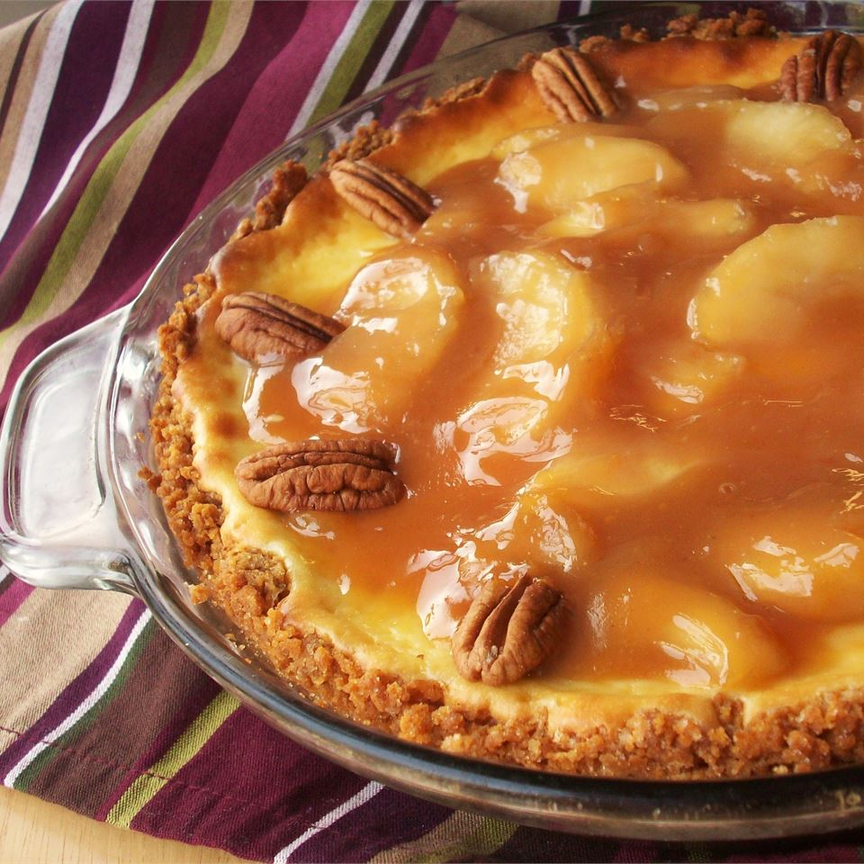

Caramel Apple Cheesecake

Apple pie filling and melted caramel topping are a sublime variation to cheesecake
Caramel Apple Cheesecake gives you the taste of a freshly dipped caramel apple without the mess! With Fall upon us and leaves changing to glorious colors, it just seems like the right time to serve this sweet and delicious cheesecake. I also have a traditional Cheesecake Recipe you may enjoy.
Ingredients
- 1 (21 ounce) can LUCKY LEAF® Premium Apple Fruit Filling.
- 1 (9 inch) graham cracker crust.
- 2 (8 ounce) packages cream cheese, softened.
- ½ cup sugar.
- ¼ teaspoon vanilla extract.
- 2 eggs.
- ¼ cup caramel topping.
- 12 pecan halves.
- 2 tablespoons chopped pecans.
Steps
- Preheat the over to 350 degrees. Reserve 3/4 cup of apple filling; set aside. Spoon the remaining filling into the crust. Beat together the cream cheese, sugar, and vanilla until smooth. Add the eggs and mix well. Pour this over the LUCKY LEAF Apple Fruit Filling. Bake for 35 minutes, or until the center of the cake is set. Cool to room temperature.
- Mix the reserved LUCKY LEAF Apple Fruit Filling and caramel topping in a small saucepan and heat for about 1 minute, or until spreadable. Spoon the apple-caramel mixture over the top of the cheesecake and spread evenly. Decorate the edge of the cake with pecan halves and sprinkle with chopped pecans. Refrigerate the cake until ready to serve.